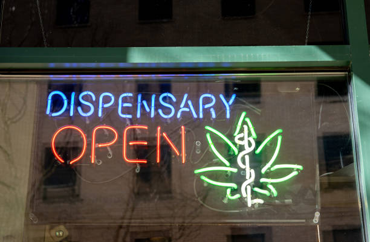

News
Cannabis Advertising Regulations for Dispensaries
Influencer Partnerships for Dispensaries
Customer Engagement Strategies for Dispensaries
About Us
HTML Site Map
Last updated:2024 Jun, Mon
No of Pages :
24 pages
1)
index.html
2)
influencer-partnerships-for-dispensaries.html
3)
customer-engagement-strategies-for-dispensaries.html
4)
news.html
5)
news/what-is-the-importance-of-social-media-marketing-for-dispensaries.html
6)
news/what-is-the-role-of-instagram-in-social-media-marketing-for-dispensaries.html
7)
news/what-is-the-best-content-strategy-for-social-media-marketing-in-the-cannabis-industry.html
8)
news/what-is-influencer-marketing-and-how-can-it-benefit-dispensaries-on-social-media.html
9)
news/what-are-the-key-metrics-to-track-for-success-in-social-media-marketing-for-dispensaries.html
10)
news/how-to-skyrocket-your-dispensarys-online-presence-with-social-media-marketing.html
11)
news/how-to-reach-a-massive-audience-and-boost-sales-for-your-dispensary-using-social-media.html
12)
news/how-to-dominate-the-competition-in-the-cannabis-industry-with-strategic-social-media-marketing.html
13)
news/how-to-build-trust-and-loyalty-with-customers-through-engaging-social-media-content-for-your-dispensary.html
14)
news/how-to-increase-foot-traffic-and-drive-online-orders-with-effective-social-media-marketing-strategies.html
15)
news/utilizing-instagram-facebook-and-twitter-to-reach-and-engage-with-your-target-audience.html
16)
news/creating-compelling-content-that-educates-and-informs-customers-about-your-products-and-services.html
17)
news/leveraging-influencer-partnerships-to-increase-brand-awareness-and-credibility-within-the-cannabis-community.html
18)
news/implementing-targeted-advertising-strategies-to-drive-traffic-to-your-dispensarys-website-or-physical-location.html
19)
news/monitoring-analytics-and-metrics-to-track-the-success-of-your-social-media-marketing-efforts-and-make-data-driven-decisions-for-future-campaigns.html
20)
privacy-policy.html
21)
feed.xml
22)
sitemap.xml
23)
sitemap.html
24)
about-us.html